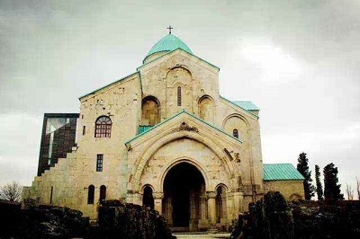
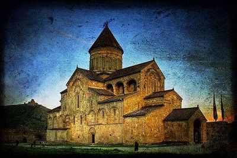
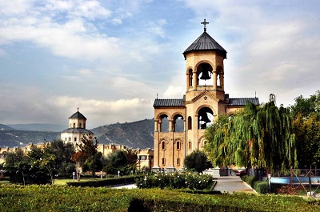
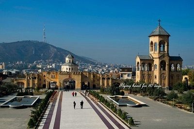
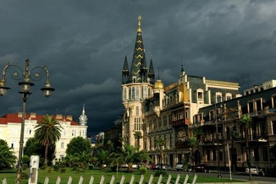
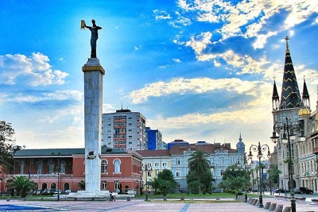
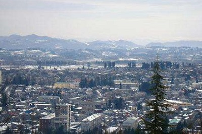
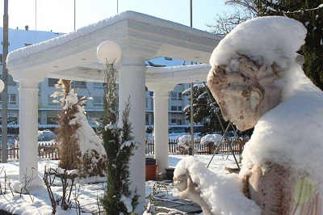

morly旅游网
格鲁吉亚是一座性价比很高的旅游地，它的首都是第比利斯，有很多可以让人放松的温泉，而且那里西临黑海，气候很温暖，很适合人们前去旅游观光，尤其是滨海沙滩浴场，景色十分的迷人，还有许多文物古迹，不仅吸引了许多普通游客前去观赏，还有很多旅行家特意前去探索，是一个很值得去的旅游地！不去会后悔哦！
格鲁吉亚面积69,700平方公里（包括南奥塞梯及阿布哈兹）。主要民族为格鲁吉亚族。官方语言为格鲁吉亚语，居民多通晓俄语。主要信仰东正教，少数信仰伊斯兰教。首都是第比利斯。
在格鲁吉亚，对同性恋者的歧视可能是非法的，但由于格鲁吉亚东正教会强硬的反同性恋立场，大多数人仍然不赞同同性恋。在教会的支持下，极右翼的同性恋群体经常恐吓和沉默女同活动家; 今年，他们成功取消了同性恋权利集会。由于这些原因，同性伴侣在公共场合表达爱意是不明智的，也是有潜在危险的。
除了海滩之外，这里的自然景点还包括一英里长的新阿索斯洞穴，水晶般清澈的利撒湖和迷蒙的尤普沙斯基峡谷。由于内乱，犯罪和地雷，国务院建议不要访问阿布哈兹.
库塔伊西
库塔伊西，1810年并入帝俄。为公路枢纽。工业以机械制造（汽车、园艺拖拉机、石油和天然气设备）为主，次为化工、丝织、皮鞋及食品加工。历史古迹很多，著名的是巴格拉特大教堂、绿石教堂、格拉特教堂和修道院等。附近有喀斯特地貌保护区。旅游、疗养地。面积70平方公里，2002年人口185,965人。
 第比利斯
第比利斯，格鲁吉亚首都。位于格鲁吉亚中东部，是格最大城市，面积348平方公里，海拔500-650米，库拉河从市区由西向东穿过。是格政治、文化、经济、教育中心，同时还是重要交通枢纽，铁路干线将其同外、北高加索连接在一起。与原苏联及周边、欧洲国家的一些大城市有航空航线。1966年市区三条地铁开通。第比利斯市是外高加索著名古都。
 巴统
巴统，格鲁吉亚所属阿扎尔自治共和国首府，外高加索黑海东南岸港口。邻近土耳其边界。人口13.2万（1985年）。十至十三世纪为要塞。1878年建市。1883年通巴库的铁路和1897-1907年石油管道建成后兴起。工业以石油加工、机械制造（船舶、电机等）为主，还有制茶、食品加工（咖啡）等，并建有海军兵工厂。市北9公里处有亚热带植物园。市东北海滨地带是旅游疗养地。
 奥祖尔盖蒂
奥祖尔盖蒂是格鲁吉亚的城市，位于该国西部，也是古利亚州的首府，距离首都第比利斯325公里，海拔高度约200米，该镇中心有一间东正教教堂，2009年人口17,916。
 内容整理至网络，如有侵权，请联系我们！1255394075@qq.com